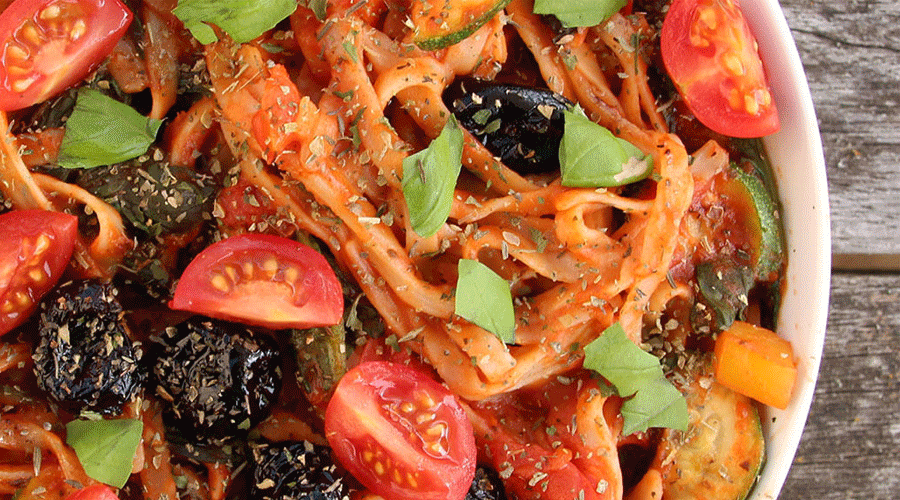

<!DOCTYPE html>
<html lang="en">
<head>
    <meta charset="UTF-8">
    <title>Make The Change</title>

    <!-- Required meta tags -->
    <meta charset="utf-8">
    <meta name="viewport" content="width=device-width, initial-scale=1, shrink-to-fit=no">

    <link rel="stylesheet" href="https://stackpath.bootstrapcdn.com/bootstrap/4.3.1/css/bootstrap.min.css"
          integrity="sha384-ggOyR0iXCbMQv3Xipma34MD+dH/1fQ784/j6cY/iJTQUOhcWr7x9JvoRxT2MZw1T" crossorigin="anonymous">
    <link rel="stylesheet" href="css/main.css">
    <link rel="stylesheet" href="css/reset.css">

</head>
<body>

<ul class="nav justify-content-end nav-tabs">
    <li class="home">
        <a>MAKE THE CHANGE</a>
    </li>
    <li class="nav-item">
        <a class="nav-link" href="what.html">WHAT?</a>
    </li>
    <li class="nav-item">
        <a class="nav-link active" href="how.html">HOW?</a>
    </li>
    <li class="nav-item">
        <a class="nav-link" href="why.html">WHY?</a>
    </li>
</ul>

<div class="main">
<h3 class="how">TIPS FOR BEGINNERS</h3>

<div class="beginners">

    <div class="unit">
        <h1 class="numbers">1</h1>
        <p class="tips">EAT LOTS OF VEGETABLES.<br>
            Fill half your plate with plenty of colorful vegetables at lunch and dinner.</p>
    </div>

    <div class="unit">
        <h1 class="numbers">2</h1>
        <p class="tips">CHANGE THE WAY YOU THINK ABOUT MEAT.<br>
            Have smaller amounts. Use it as a garnish instead of a centerpiece.</p>
    </div>

    <div class="unit">
        <h1 class="numbers">3</h1>
        <p class="tips">CHOOSE GOOD FATS.<br>
            Fats in olive oil, olives, nuts and nut butters, seeds, and avocados are particularly healthy choices.</p>
    </div>

    <div class="unit">
        <h1 class="numbers">4</h1>
        <p class="tips">COOK A VEGETARIAN MEAL AT LEAST ONCE A WEEK. <br>
            Build these meals around beans, whole grains, and vegetables.</p>
    </div>

    <div class="unit">
        <h1 class="numbers">5</h1>
        <p class="tips">INCLUDE WHOLE GRAINS FOR BREAKFAST. <br>
            Start with oatmeal, quinoa, buckwheat, or barley. Then add some nuts or seeds along with fresh fruit.</p>
    </div>

    <div class="unit">
        <h1 class="numbers">6</h1>
        <p class="tips">GO FOR GREENS. <br>
            Try a variety of green, leafy vegetables each day. Steam, grill, braise, or stir-fry to preserve their
            flavor.</p>
    </div>

    <div class="unit">
        <h1 class="numbers">7</h1>
        <p class="tips">BUILD A MEAL AROUND A SALAD. <br>
            Fill a bowl with salad greens and add an assortment of vegetables along with fresh herbs, beans, or tofu.
        </p>
    </div>

    <div class="unit">
        <h1 class="numbers">8</h1>
        <p class="tips">EAT FRUIT FOR DESSERT. <br>
            A refreshing slice of watermelon, or a crisp apple will satisfy your craving for a sweet bite after a meal.
        </p>
    </div>

</div> <!-- end of .beginners -->


<h3 class="recipes">RECIPES</h3>

<p class="medi">Mediterranean Vegetable Spaghetti</p>
<hr id="medi">


<section class="ingredients">
    <p>Prep-time: 10 minutes <br>
        Ready In: 20 minutes <br>
        Cook Time: 15 minutes <br>
        Serves 2
    </p>
    <br>

    <p>INGREDIENTS</p>
    <br>
    <hr id="ingredients">
    <ul>
        <li>10 ounces brown rice spaghetti</li>
        <li>1 red bell pepper, cubed small</li>
        <li>1 yellow bell pepper, cubed small</li>
        <li>2 plum tomatoes, sliced into eighths (discard the seeds)</li>
        <li>½ jalapeño (optional)</li>
        <li>2 tablespoons dried herbes de provence</li>
        <li>2 tablespoons tomato purée</li>
        <li>2 tablespoons apple cider vinegar or juice of 1 lime</li>
        <li>12 cherry tomatoes, quartered</li>
        <li>1 zucchini, halved then sliced into thin half-rounds</li>
        <li>1 bunch spinach, chopped</li>
        <li>Handful of black olives</li>
    </ul>

</section>

<section class="instructions">
    <p>INSTRUCTIONS</p>
    <br>
    <hr id="instructions">
    <ol>
        <li>Bring the pasta water to a boil.</li>
        <li>Place the chopped peppers, plum tomatoes, salt, jalapeño (optional) and herbes de Provence into a 
            saucepan. Add ¼ cup water and allow the mix to simmer and gently cook down to form the sauce. If the 
            liquid dries up before the tomatoes and peppers start to release their juice, add more water, 1 tablespoon at a time.
        </li>
        <li>After a few minutes, add the tomato purée and the apple cider vinegar or lime juice.</li>
        <li>Cook the spaghetti according to package directions.</li>
        <li>Once the tomato and peppers begin to meld into a sauce, add the cherry tomatoes, zucchini slices, and 
            spinach. Mix well and cook for about 5 to 7 minutes.
        </li>
        <li>Drain the pasta, then stir the pasta, olives, and an extra sprinkling of herbes de Provence into the
            sauce.
        </li>

    </ol>

</section>
</div>

<script src="https://code.jquery.com/jquery-3.3.1.slim.min.js"
        integrity="sha384-q8i/X+965DzO0rT7abK41JStQIAqVgRVzpbzo5smXKp4YfRvH+8abtTE1Pi6jizo"
        crossorigin="anonymous"></script>
<script src="https://cdnjs.cloudflare.com/ajax/libs/popper.js/1.14.7/umd/popper.min.js"
        integrity="sha384-UO2eT0CpHqdSJQ6hJty5KVphtPhzWj9WO1clHTMGa3JDZwrnQq4sF86dIHNDz0W1"
        crossorigin="anonymous"></script>
<script src="https://stackpath.bootstrapcdn.com/bootstrap/4.3.1/js/bootstrap.min.js"
        integrity="sha384-JjSmVgyd0p3pXB1rRibZUAYoIIy6OrQ6VrjIEaFf/nJGzIxFDsf4x0xIM+B07jRM"
        crossorigin="anonymous"></script>

</body>
</html>